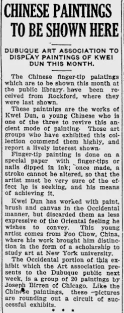

Telegraph-Herald and Times-Journal，Dubuque 剪页 1928-11-02
访问原网页 ↗Visit original website ↗

馆藏图像与原文Archived images and documents
- Telegraph-Herald and Times-Journal，Dubuque 剪页 1928-11-02Telegraph-Herald and Times-Journal，Dubuque — exhibition clipping I059
- Telegraph-Herald and Times-Journal，Dubuque 剪页 1928-11-15Telegraph-Herald and Times-Journal，Dubuque — exhibition clipping I060


来源页摘录Source-page excerpt
Chinese American Eyes: Kwei Dun Exhibition in Dubuque
…2, 1928 November 15, 1928 (Tomorrow: Kwei Dun Exhibition in Roc...…
相关记录Related records · S066 · S067
原始网址Original URL
https://chimericaneyes.blogspot.com/2013/08/kwei-dun-exhibition-in-dubuque.html